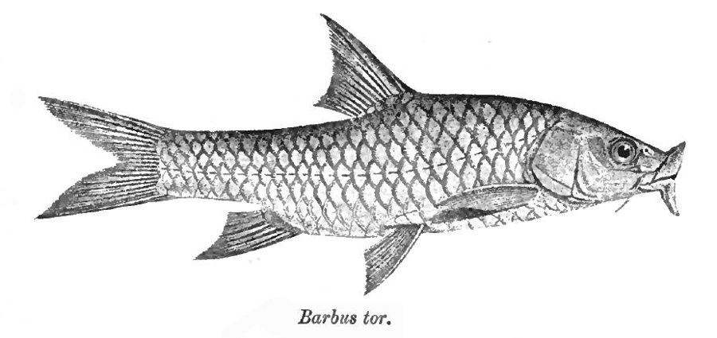

तोर महासीर मछलीTor Mahseer
Tor tor · Cyprinidae · FSH-0073

- Scientific name वैज्ञानिक नाम
- Tor tor (Hamilton, 1822)
- Family कुल
- Cyprinidae
- Hindi हिंदी
- तोर महासीर मछली
- Local names स्थानीय नाम
- tor mahseer, mahseer, tor, sahar, mahaseer
- Status here यहाँ की स्थिति
- native
- Movement आवागमन
- Resident, here all year
- Known from कहाँ दर्ज
- Others have published records from the wider Awadh–Purvanchal plain, none yet from Basti–Ayodhya अवध–पूर्वांचल से दूसरों के प्रकाशित अभिलेख, बस्ती–अयोध्या से अभी नहीं
- IUCN IUCN
- not evaluated
- Review समीक्षा
- not yet reviewed
When to look कब देखें
Present all year. साल भर मौजूद।
Uses and possibilities उपयोग और संभावनाएँ
Drawn from the documented uses in the profile below, where each is labelled traditional, current or a research lead. All uses →
Tell it apart from इनसे अलग पहचानें
तोर महासीर मछली / Tor Mahseer
Tor tor (Hamilton, 1822) — Cyprinidae
तोर महासीर मछली — भारतीय उपमहाद्वीप की बड़ी नदियों, गहरी खाइयों और स्वच्छ जलधाराओं में पाई जाने वाली एक अत्यंत शक्तिशाली, भव्य और प्रसिद्ध देशी कार्प मछली है। इसे 'नदियों का बाघ' भी कहा जाता है। इसका शरीर गहरा, गठीला और सुनहरा-हरा होता है, जिसके तराशे (शल्क) बहुत बड़े और मजबूत होते हैं। इसके होंठ बहुत मोटे और मांसल होते हैं, और निचले जबड़े का होंठ लगातार मुड़ा हुआ एक मध्य पालि (लोब) बनाता है। इसके मुंह पर चार मूंछें होती हैं और इसके निचले पंख चमकदार लाल या नारंगी रंग के होते हैं। यह पत्थरों पर चिपके घोंघे (मोलस्क), जलीय पौधे और छोटी मछलियां खाती है। यह खेल और भोजन दोनों दृष्टियों से एक अत्यंत महत्वपूर्ण और प्रतिष्ठित देशी मछली है।
Quick Identification त्वरित पहचान
| Feature | Description |
|---|---|
| Size | Very large cyprinid; reaches about 200 cm TL (Froese & Pauly 2025) |
| Body Shape | Stout, moderately deep and compressed; head shorter than body depth (Hamilton 1822) |
| Lips & Mouth | Fleshy lips; continuous labial fold across lower jaw forming a median lobe (Talwar & Jhingran 1991) |
| Barbels | Two pairs; rostral and maxillary barbels well developed and equal in length (Talwar & Jhingran 1991) |
| Colour Pattern | Golden-green dorsally, pinkish-gold along flanks, belly white; paired and anal fins deep reddish-orange (Talwar & Jhingran 1991) |
| Dorsal Fin | Short-based, with a strong, smooth, non-serrated bony spine; 3 unbranched and 9 branched rays (Hamilton 1822) |
| Scales | Exceptionally large cycloid scales; only 22 to 27 scales along complete lateral line (Talwar & Jhingran 1991) |
Field tip: Look in deep rocky pools and strong river currents. A massive, deep-bodied golden-green carp with exceptionally large scales, very fleshy lips with a continuous labial lobe, four barbels, and brilliant reddish fins, is Tor tor.
हिंदी: यह बड़े आकार की सुनहरी-हरी मछली है जिसके तराशे बहुत बड़े होते हैं (केवल 22 से 27 तराशे)। इसके होंठ बहुत मोटे होते हैं, मुंह पर चार मूंछें होती हैं और निचले पंख चमकीले लाल-नारंगी होते हैं।
Morphology आकारिकी
Size as given by FishBase (Froese & Pauly 2025):
| Measurement | Range | Notes |
|---|---|---|
| Maximum length | 200 cm TL | Froese & Pauly (2025), FishBase |
| Lateral line scales | 22–27 | Unusually large scales along lateral line |
| Dorsal fin rays | iv, 9 | Strong, smooth spine lacking any serrations (Hamilton 1822) |
| Anal fin rays | iii, 5 | Standard configuration (Talwar & Jhingran 1991) |
| Pectoral fin rays | i, 15–16 | Broad and muscular (Talwar & Jhingran 1991) |
| Pelvic fin rays | i, 8 | Abdominal insertion (Talwar & Jhingran 1991) |
The body is oblong, massive, and compressed, with the dorsal profile rising steeply to the origin of the dorsal fin (Hamilton 1822). In adults, the body depth is noticeably greater than the length of the head, distinguishing it from the slender Golden Mahseer (Tor putitora) (Talwar & Jhingran 1991). The snout is rounded and fleshy. The lips are thick, fleshy, and extensively hypertrophied, with the continuous lower labial fold forming a distinct uninterrupted median lobe. Two pairs of well-developed barbels are present: a rostral pair and a maxillary pair, both approximately equal in length to each other (Daniels 2002).
Live coloration is magnificent: the dorsum is deep greyish-green to dark bronze, transitioning into brilliant golden-pink or iridescent brassy-yellow along the upper flanks and silvery-white on the abdomen (Talwar & Jhingran 1991). The extraordinarily large scales shimmer with metallic luster. The dorsal fin is dusky olive, while the pectoral, pelvic, and anal fins are rich reddish-orange to bright vermilion (Hamilton 1822).
हिंदी: शरीर बहुत गठीला और भारी होता है तथा पीठ उठी हुई होती है। सिर की लंबाई शरीर की गहराई से कम होती है। होंठ बहुत मोटे और मांसल होते हैं तथा निचले होंठ की तह एक मध्य उभार बनाती है। मुंह पर चार मजबूत मूंछें होती हैं। तराशे बहुत बड़े और सोने जैसे चमकते हैं, और निचले पंख गहरे लाल रंग के होते हैं।
Behaviour & Ecology व्यवहार और पारिस्थितिकी
The Tor Mahseer is a powerful benthopelagic fish that dominates large river channels, rocky pools, and foothill river gorges (Talwar & Jhingran 1991). It requires clear, well-oxygenated water with high current velocity and boulder-strewn or gravelly riverbeds.
Adult mahseer are nomadic, solitary or travel in small loose bands, patrolling deep river runs and scouring pools below rapids (Daniels 2002). They are strong upstream swimmers, capable of leaping through rapids and negotiated cataracts during seasonal migrations. Equipped with muscular lips, strong pharyngeal teeth, and sensory barbels, they actively forage along the river bottom, turning over stones to crush shelled molluscs or browsing on dense beds of submerged river weeds (Talwar & Jhingran 1991). As the southwest monsoon sets in, adults undertake extensive upstream breeding migrations into swollen foothill tributaries, descending back to plains river pools as waters clarify in autumn.
हिंदी: यह तेज बहाव वाली स्वच्छ नदियों और गहरे कुंडों में रहती है। यह अत्यंत शक्तिशाली तैराक है जो नदी की विपरीत धारा में भी तेजी से तैर सकती है। अपने मजबूत जबड़ों और ग्रसनी के दांतों से यह पत्थरों पर चिपके घोंघों को फोड़कर खाती है। वर्षा ऋतु में यह अंडे देने के लिए नदी के ऊपरी हिस्सों की ओर जाती है।
Life Cycle / Phenology जीवन चक्र
Seasonal phenology in northern Indian river systems across the agricultural year (Talwar & Jhingran 1991; Daniels 2002):
| Season / Month | Stage | Field Observation |
|---|---|---|
| June–July (Monsoon onset) | Upstream migration | Adults embark on long upstream runs into clear foothill streams (Talwar & Jhingran 1991) |
| July–August (Kharif peak) | Spawning & breeding | Spawning takes place over clean gravel beds in fast-flowing shallows (Daniels 2002) |
| September–November (Post-monsoon) | Downstream descent | Adults return to deep pools; fingerlings feed on epilithic algae in glides (Talwar & Jhingran 1991) |
| December–February (Rabi winter) | Deep pool dormancy | Mahseer aggregate in deep, undisturbed river scour holes and rocky pools |
| March–May (Summer / Zaid) | Active omnivorous feeding | Voracious feeding on molluscs and weed beds as water clarifies (Daniels 2002) |
Breeding takes place during the monsoon months from July to September (Talwar & Jhingran 1991). Spawning runs are triggered by monsoon surges, cooler water temperatures, and increased turbidity. Females deposit thousands of demersal, adhesive orange eggs among clean gravel shoals in fast-flowing side streams. The eggs hatch after several days, and the alevins remain hidden in gravel interstices until the yolk sac is absorbed. Fry feed on micro-invertebrates and diatoms before migrating downstream into primary river channels (Daniels 2002).
हिंदी: मॉनसून की बाढ़ आने पर यह नदी के ऊपरी स्वच्छ हिस्सों में जाकर कंकड़-पत्थर वाले किनारों पर अंडे देती है। कुछ दिनों में अंडों से बच्चे निकलते हैं जो पत्थरों के बीच छिपकर रहते हैं। सर्दियां आने पर बड़ी मछलियां नदी के सबसे गहरे कुंडों में चली जाती हैं।
Diet and Feeding Behaviour आहार
Tor tor is an opportunistic omnivore with specialized molluscivorous adaptations (Talwar & Jhingran 1991):
Natural diet components:
- Freshwater gastropod snails (Bellamya, Lymnaea) and bivalve clams crushed with strong pharyngeal teeth (Daniels 2002).
- Submerged aquatic macrophytes, filamentous green algae, and riverbed mosses (Talwar & Jhingran 1991).
- Benthic insect larvae, including caddisfly cases, mayfly nymphs, and stonefly larvae scraped from stones.
- Small forage fishes, crabs, and river prawns taken opportunistically by adult individuals.
हिंदी: यह एक सर्वाहारी मछली है। यह अपने मजबूत दांतों से नदी के घोंघों और सीपों को फोड़कर खाती है। इसके अलावा यह जलीय पौधे, काई, नदी के झींगे और छोटी मछलियों को भी खाती है।
Predators / Natural Enemies शत्रु
Documented natural predators in northern Indian river corridors:
- Large river predators: Monster catfishes like Bagarius bagarius (Goonch) and Wallago attu (Striped Catfish) prey on juvenile and sub-adult mahseer.
- River crocodilians: Mugger crocodiles and gharials hunt large adult mahseer in deep river pools.
- Riparian mammals: Smooth-coated otters hunt cooperatively for schooling mahseer.
- Raptors and storks: Pallas's fish eagles and black-necked storks capture fingerlings in shallow river riffles.
हिंदी: गूंज, बोआल, मगरमच्छ, घड़ियाल, उदबिलाव और मत्स्य-चील इस मछली का शिकार करते हैं।
Agricultural / Human Relevance कृषि प्रासंगिकता
Legendary game and food fish: The Tor Mahseer is celebrated worldwide as one of the premier freshwater sport fishes, revered by anglers for its immense power and spectacular fighting runs. It is also a premier food fish in river valleys, commanding high prices in fish markets owing to its firm, rich, and highly nutritious flesh. It supplies high-quality protein and essential micronutrients to riverine human populations.
River health bio-indicator: Because it demands clean, flowing, well-oxygenated water and silt-free gravel beds, the presence of Tor tor serves as a prime indicator of intact river ecological health (Talwar & Jhingran 1991).
Traditional: A culturally revered river fish in northern India, often protected in temple pools and sacred river sanctuaries along the Ganges and Ghaghara.
Today: Heavily threatened by dam construction, destructive dynamiting, and water abstraction across northern plains rivers.
Research direction (a lead, not a result): Monitoring the seasonal transit of mahseer through barrage bypass channels in the Ghaghara basin.
हिंदी: महासीर भारत की सबसे प्रसिद्ध और प्रतिष्ठित खेल व खाद्य मछली है। इसे 'नदियों का बाघ' माना जाता है। यह केवल साफ और बहते पानी में रहती है, इसलिए इसकी उपस्थिति नदी के स्वच्छ और स्वस्थ होने का सबसे बड़ा प्रमाण है।
Expected Locally स्थानीय रूप से अपेक्षित
Not a field record. Written from published accounts for eastern Uttar Pradesh. No confirmed local sighting yet — if you have seen it, that is what the atlas needs.
अभी तक स्थानीय पुष्टि नहीं। यह विवरण प्रकाशित स्रोतों से है, किसी अवलोकन से नहीं।
The Tor Mahseer is expected across eastern Uttar Pradesh in perennial rivers, large flowing streams, oxbow lakes (tals), and major canal systems. Look in river pools and flowing glides from August through January. GBIF holds published records from the wider Awadh–Purvanchal plain, none yet from Basti–Ayodhya. A voucher photograph showing the deep golden-green body, exceptionally large scales (22–27), fleshy lips with median lobe, and bright reddish fins, submitted via the About page, would confirm the first local documentation for the project area.
Distribution वितरण
Global range: Indigenous across the northern and central Indian subcontinent, occurring natively in India, Nepal, Pakistan, and Bangladesh (Talwar & Jhingran 1991).
In India: Distributed through the Ganges, Narmada, Tapti, and Mahanadi river basins, extending into foothill reaches across Uttar Pradesh, Madhya Pradesh, and Bihar (Menon 1999).
In Uttar Pradesh: Recorded in the Ganges, Yamuna, Ghaghara, Sarda, and Gandak river drainages, especially along swift channels and deep pools.
In Basti district / eastern UP: Expected as a seasonal native migrant and pool resident in the deep waters of the Ghaghara and Kuwano rivers.
हिंदी: यह भारत की गंगा, नर्मदा और ताप्ती नदी घाटियों में पाई जाती है। उत्तर प्रदेश में यह घाघरा, शारदा और गंडक जैसी बड़ी नदियों के मुख्य प्रवाह और गहरे कुंडों में मिलती है।
Research Questions शोध प्रश्न
- How far down the Ghaghara and Rapti river plains do adult Tor tor disperse during the post-monsoon period before returning upstream to breed? / मॉनसून के बाद यह मछली मैदानी नदियों में कितनी दूर तक प्रवास करती है?
- What is the degree of genetic fragmentation among mahseer populations separated by major irrigation barrages across eastern Uttar Pradesh?
- What minimum discharge and water velocity thresholds are required to trigger upstream spawning runs in northern Indian river corridors? / नदी में कितना तेज बहाव होने पर महासीर अंडे देने के लिए ऊपर की ओर जाती है?
- To what extent does mahseer foraging control invasive or vector-harbouring gastropod snail populations in deep river glides?
- Can community-managed sacred river sanctuaries effectively preserve adult breeding stocks from illegal dynamiting and gill netting?
Similar Species मिलती-जुलती प्रजातियाँ
| Species | Key Differences |
|---|---|
| Tor tor (Tor Mahseer) | Head length shorter than body depth; body deep; 22–27 lateral line scales; bright reddish fins (Talwar & Jhingran 1991) |
| Tor putitora (Golden Mahseer) | Head length distinctly greater than body depth; body streamlined and elongate; 25–28 scales; yellowish fins (Talwar & Jhingran 1991) |
| Neolissochilus hexagonolepis (Chocolate Mahseer) | Lips thin, lacking continuous labial fold and median lobe; scales hexangular; 28–31 scales |
| Labeo rohita (Rohu) | Mouth inferior with distinctly fringed lips; scales much smaller (40–44 in lateral line); lacks large bony dorsal spine (Daniels 2002) |
Field rule: A massive, deep-bodied golden-green carp with head length shorter than body depth, fleshy lips with a continuous labial lobe, four barbels, only 22–27 very large lateral line scales, and reddish fins, is Tor tor.
हिंदी: गोल्डन महासीर का सिर लंबा होता है और रोहू के तराशे बहुत छोटे होते हैं, जबकि तोर महासीर का शरीर गहरा होता है, तराशे बहुत बड़े होते हैं और पंख लाल होते हैं।
Taxonomy & Classification वर्गीकरण
Original description. Described by Francis Hamilton in 1822 as Cyprinus tor in An Account of the Fishes Found in the River Ganges and Its Branches, page 305. Type locality: River Mahananda, north-east Bengal.
Subspecies. Monotypic — no subspecies are currently recognized across its range.
Family and order placement. Order Cypriniformes, family Cyprinidae, subfamily Torinae (or Cyprininae). The genus Tor Gray, 1834, encompasses the true mahseers of South and Southeast Asia.
Phylogenetic notes. Tor tor is the type species of the genus Tor, characterized by hypertrophied fleshy lips, a continuous lower labial fold with a median lobe, and massive cycloid scales (Talwar & Jhingran 1991).
IUCN status rationale. Not evaluated (NE) on the global IUCN Red List of Threatened Species. However, wild populations face severe pressures from habitat degradation, dam construction, and overfishing.
हिंदी: इसका वैज्ञानिक नाम Tor tor है और यह Cyprinidae परिवार के Tor वंश की प्रारूप प्रजाति है।
Photo Gallery फोटो गैलरी
No photos yet — add field photos to media/species/tor_mahseer/ and run node scripts/sync_photos.js.
Photos needed आवश्यक फोटो
- [ ] Lateral view of adult specimen showing deep golden body and red fins (गहरे सुनहरे शरीर और लाल पंखों की पूरी तस्वीर)
- [ ] Close-up of head showing fleshy lips, median labial lobe, and barbels (मोटे होंठ, मध्य पालि और मूंछों का स्पष्ट दृश्य)
- [ ] Close-up of large scales on flank (पार्श्व के बड़े चमकीले तराशों की तस्वीर)
- [ ] Freshly captured specimen from a river pool (नदी से पकड़ी गई ताजा मछली)
References संदर्भ
- Hamilton, F. (1822). An Account of the Fishes Found in the River Ganges and Its Branches. Archibald Constable and Company, Edinburgh, p. 305.
- Talwar, P. K. & Jhingran, A. G. (1991). Inland Fishes of India and Adjacent Territories, Vol. 1. Oxford & IBH Publishing Co., New Delhi, pp. 308–309.
- Menon, A. G. K. (1999). Check list - fresh water fishes of India. Records of the Zoological Survey of India, Occasional Paper No. 175, p. 82.
- Daniels, R. J. R. (2002). Freshwater Fishes of Peninsular India. Universities Press, Hyderabad, pp. 82–84.
- Froese, R. & Pauly, D. (Eds.) (2025). FishBase. World Wide Web electronic publication.
- GBIF Occurrence Data — Tor tor, India (2025).
Source file: species/fauna/fish/tor_mahseer.md